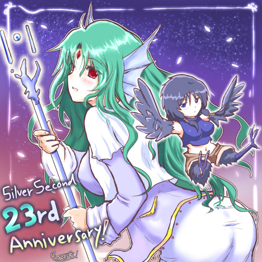
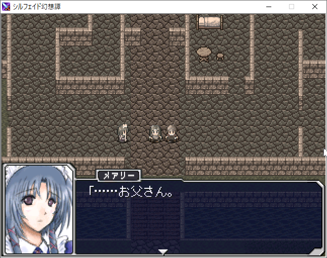
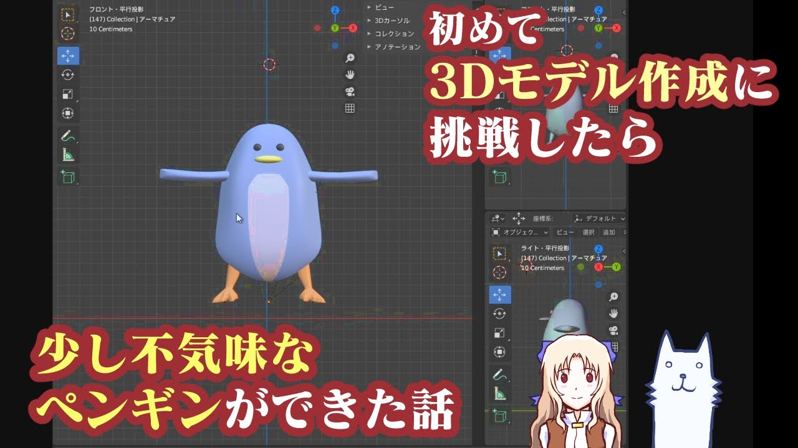

■2021-12-24 (金) シルバーセカンド23周年！▼
ということで、本サイト「シルバーセカンド」は
2021年12月24日をもってついに23周年をむかえました！
ここまで長いこと続けられたのも皆さまのお声と手に支えられたおかげです！
いつも本当にありがとうございます！

今回は『シルフェイド幻想譚』からスケイル（←）と、『旅団世界TRPGリプレイ2巻』からクバ（→）！
【2021年の成果】
2021年の成果は以下の通り！
●ウディタの修正が大変でした！
1月をいくらか過ぎた頃から早々、Windowsの問題で
2ヶ月以上にわたるウディタの大規模修正をするはめになりました。
「Windows10では起きないけどWin7と8だけで起きる環境依存バグだとか
10分放置してると起きるバグとかやめてぇぇー！」
となっていました。
使用していたライブラリも3年ぶりに最新にしたら大変なことに！
Steamの片道勇者にも影響が出たので修正していたみたいですが、
確認したら4月中旬くらいまで対応に駆けずり回っていたようです。
ですが、今年はウディタに様々なご支援をいただくことができ、
おかげさまで「動画再生機能」や「効果音チャンネル再生機能」など
追加機能をいろいろ搭載する機会も生まれました（今はタイル48x48対応などの作業中）。
2018年以来、久々に複数の新機能を搭載できた1年でしたね！
●旅団世界TRPGリプレイ2巻発売！
TRPGリプレイ、今年は2巻目を出させていただきました！
今回は片道勇者ベースの舞台でお送りします！
パラレル世界の薬師ネムリも出るぞ！（でもネムリの過去は相変わらず悲惨）
通勤通学の読書のお供に！
旅団世界TRPGリプレイ2巻販売ページ
個人デジタルゲーム開発だけだと、数年単位でお話を書かない時期があったり、
キャラクターの絵を全然描かなかったりするシーズンができてしまうので、
TRPGのセッションやリプレイでお話作りから絵作りからゲームバランス感覚の維持まで
一通りの基礎訓練ができるのはとても助かっています。
なお、2022年は3巻が発売予定です！
プレイがだいぶゆっくりだったのとあくまで副業ポジションのペース配分なので、
発売は2022年の「中盤」以降になりそうです。
楽しみにしてくださっている方は少々お待ちください！
●シルフェイド幻想譚、顔グラフィックリファイン！
今さらですが『シルフェイド幻想譚』のグラフィックをリファインしました！
元の雰囲気を残したまま顔グラフィックを整形したのが主なので
遠い記憶の中にあるシルフェイド幻想譚と比べるとあんまり変わってないと思いますが、
また遊び直してくださる方がいらっしゃったのはうれしかったです！

「絵は後から差し替えできるから今はヘタでも大丈夫！
とにかく中味の方をしっかり作ればいいんだ！」
といつからか思うようになったのですが、再び話題に挙がった中で、
シル幻の中味は今でもある程度通用するらしいので、
もしかしたらいいものを作れたのかな、と小さく自画自賛していました。
というのも、私は世界で唯一「完全ネタバレ済みの」シル幻しか知らない身なので、
シル幻がどう面白いかがよく分かってないんですよ！
幸福な身のはずなのに自分が最も遊びたかったものが体験できない不幸！
似たようなコンセプトのものを作ってみても、同じ面白さを出せるかは運になりそうです。
●TRPGテストプレイなどのお仕事ちょこちょこ
ご縁があってTRPGのテストプレイなどに2件関わらせていただきました！
『光砕のリヴァルチャー』（開発日誌中の記事）
https://smokingwolf.github.io/dev_blog/archive/2021/04.html#2021-04-24
身体が闘争を求めている人が喜びそうなロボTRPG！
テストプレイだけでなく敵データも1体作らせていただきました。
『瞳逸らさぬイリスベイン』（こちらはTwitterで一言）
https://twitter.com/WO_LF/status/1408337415866093568
独特の世界設定のもとで行われる現代復讐劇TRPG！
世界設定が面白くて好きでした。
他人の創作物のデータのブラッシュアップ工程を間近で見たのは
ほぼ初めてだったので、すごく勉強になりました。
と同時に、テストプレイ側の観点も体験できたのでとても勉強になりました。
「この立場だとこういう指示が欲しいんだな！」と思ったりできるのは大事な体験です。
●3Dアバター作ってみた！
こちらは新たな挑戦！
動くと気持ち悪いペンギンをBlenderで作ってみたり、
VRoid Studioというソフトでマスコットキャラのラッシーを作ってみたりしました。
ペンギンは「かわいいのできたー、やったー！」と思っていざ動かしてみたら
全然期待通りじゃなくて大笑いしてました。今でも特に直していません。
記念に動画も作ったのでよかったらぜひご覧ください。
動くと気持ち悪いペンギンの動画

3Dの女の子（ラッシー）の動画
●『片道勇者2』がいっぱい進んだ！
今年は『片道勇者2』の開発がいっぱい進みました！
もちろんあれこれ試行錯誤するシーンも相当に長く、
画面サイズ変更やらバトルシステム変更といった
大規模改修も複数回発生してしまったのですが、
ようやく『片道勇者』の『2っぽい感じ！』という目標が
満たせそうなベースができあがってきた感触になったので、
今はヒャッホーと言いながらデータをガンガン作っているところです。
でもここからが一番長い！
ローグライクRPGというジャンルの特性上、
「面白くなったら完成！」という最も難しいゴールとの戦いになります。
でもきっとやれるはず。
【今年の振り返り】
振り返って一番よく思い出すのは、
今年はたびたび体調が悪くなった一年だったということでした。
今も調子が悪い！
今年は6月頃から非常に体がだるかったり思考体力が低下した時期があったのと、
それ以後は寝てるときに急に呼吸が苦しくなったりする症状が
出たりするのにちょっと困っていました。
いちおうお医者さんの診察は受けています。
慣れて、そうなる前提の覚悟を持って行動を取れるようになれば
そんなに大したことじゃないんですが、
慣れない間はイレギュラーな状況が突然起きるのが怖い！
でも覚悟ができて、それ前提の行動を取っていればまあまあ平気！
あと、新型感染症のアレコレもいちおう振り返っておきますと、
5月頃や夏頃は地域によっては一時
病院に入れないほど感染者数が激化してましたが、
今の日本はかなり落ち着いてていいですね！
（でも増えつつはあるのかもしれません、ご注意を）
私はどのみちあまり出かけられませんが、
周りのみなさんが平穏無事な心持ちだと、私も心安らかになれます。
【23周年生放送をしました（追記）】
Youtube配信ページ
23周年記念で1年を振り返る生放送をさせていただきました（私の生声注意！）。
みなさまのたくさんのコメント、本当にありがとうございます！ 勉強になりました！
【来年の目標！】
●旅団世界TRPGリプレイの3巻を出す。
いよいよ、この企画の初期目標であるリプレイ3巻に到達します！
次回は不思議なルールの状況でかわいい＆セクシー盛りだくさん（予定）の一冊です！
●『片道勇者2』の開発続行！
思ったより全然終わりが見えませんが、
ゴールには近付いているのと、方向性が固まってきたので、
あとはひたすら走り続けます。
【最後に】
2021年も、本当にたくさんの人のお世話になりました！
ここを見てくださるみなさまや、ゲームを遊んでくださっているみなさま、
ご支援してくださったみなさまのおかげで、
自分は今も大好きな開発を続けることができています。
今でも私のゲームや記事を見てくださっている皆さまには、本当に感謝の限りです！
もしよければ来年もときどきでいいので、見にきてくださると幸いです。
今年も一年、本当にありがとうございました！
次回の開発日誌は2022年の元旦に更新予定です。
それでは皆さま、お体には気をつけて、よいお年を！
2021-12-24 (金)  カテゴリ: 開発日誌
カテゴリ: 開発日誌
 カテゴリ: 開発日誌
カテゴリ: 開発日誌